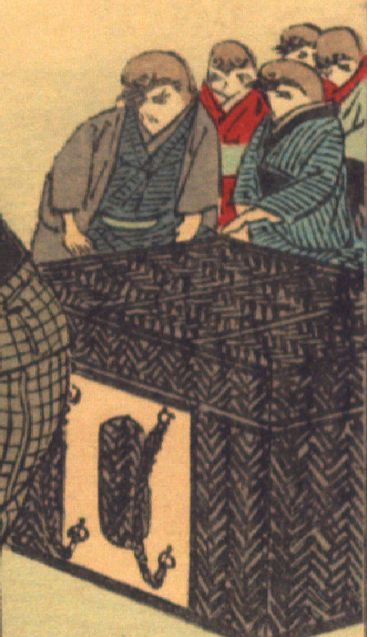

雀たち。5体の雀がそれぞれ着物を着て、葛籠の奥に座っている。袖から出ている腕は人間のものである。手前の1体は青色の着物に黒っぽい羽織をまとい、手前の様子を伺っている。その右手の1体は青い着物を着ている。奥の3体は赤色の着物を着ているようである。
出典：親書誌：U426_nichibunken_0109：Le moineau qui a la langue coupée／日付：2006／資源識別子：U426_nichibunken_0109_0006_0000
Copyright (c)2010- International Research Center for Japanese Studies, Kyoto, Japan. All rights reserved.